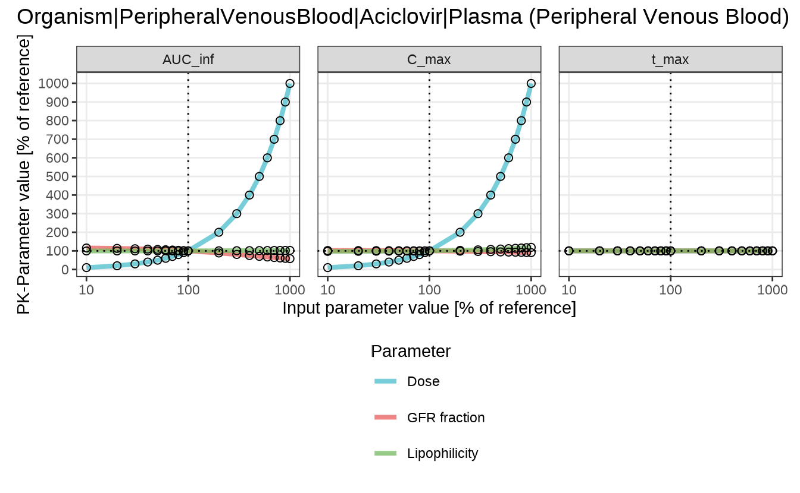
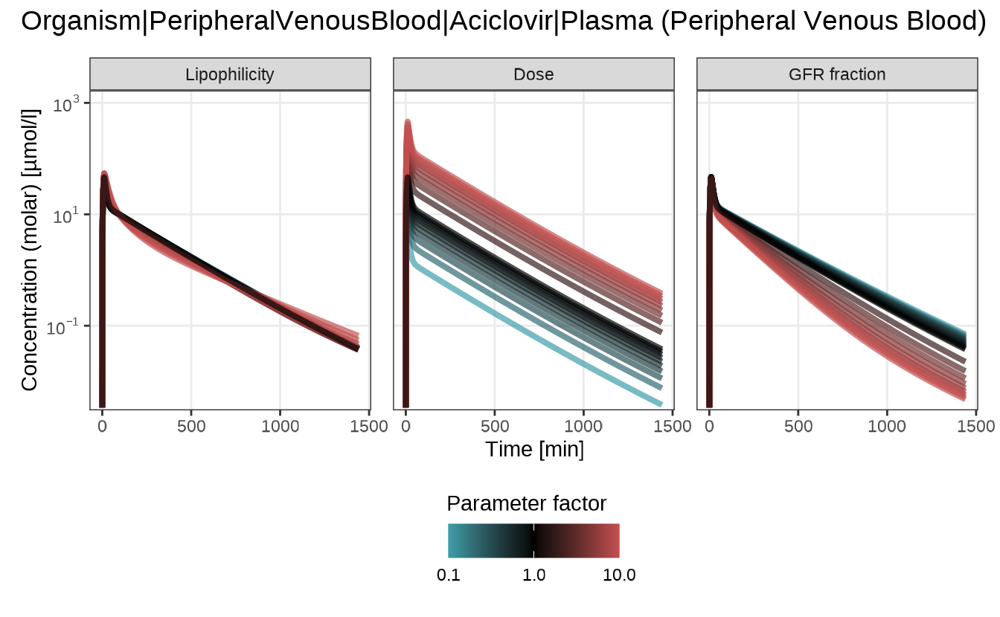
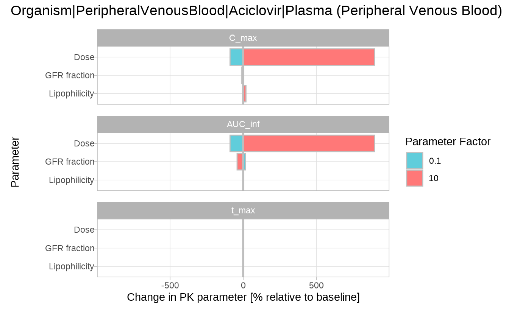
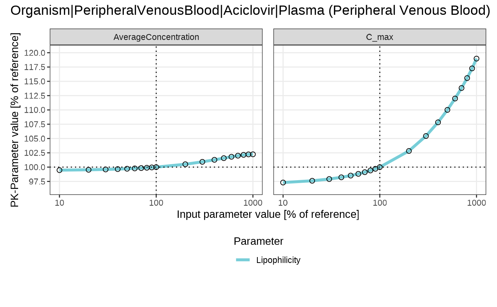

Sensitivity analysis varies model parameters and measures the effect
on PK outcomes, which helps you judge model robustness when input values
are uncertain. This vignette walks through a complete workflow with
sensitivityCalculation() and its plot functions, using
aciclovir as the example: run a base simulation, vary
selected parameters, calculate sensitivities, and visualize the impact.
For the mathematical background, see the OSPS documentation on sensitivity
analysis.
Running the sensitivity analysis
sensitivityCalculation() operates on an OSPS
Simulation object, not on a project. You obtain one by
loading the worked example project and running its
aciclovir_iv scenario; the resulting Scenario Result
carries the prepared Simulation in its
simulation field:
project <- loadProject(exampleProjectPath())
results <- runScenarios(project, scenarios = "aciclovir_iv")
simulation <- results[["aciclovir_iv"]]$simulationBy default sensitivityCalculation() re-runs the
simulation with each parameter scaled from 0.1x to 10x its original
value; pass variationRange to change this. It returns the
varied parameters, the simulation results, and a data frame of PK
metrics per variation.
Here you analyze how changes in lipophilicity, dose, and glomerular filtration rate (GFR fraction) affect the pharmacokinetics of aciclovir:
outputPaths <- c(
Aciclovir_PVB = "Organism|PeripheralVenousBlood|Aciclovir|Plasma (Peripheral Venous Blood)"
)
parameterPaths <- c(
"Lipophilicity" = "Aciclovir|Lipophilicity",
"Dose" = "Events|IV 250mg 10min|Application_1|ProtocolSchemaItem|Dose",
"GFR fraction" = "Neighborhoods|Kidney_pls_Kidney_ur|Aciclovir|Glomerular Filtration-GFR-Aciclovir|GFR fraction"
)
analysis <- sensitivityCalculation(simulation, outputPaths, parameterPaths)To interpret the results, focus on lipophilicity. Isolate that parameter and the columns that drive the sensitivity calculation:
analysis$pkData |>
dplyr::filter(
ParameterPath == "Aciclovir|Lipophilicity",
PKParameter == "AUC_inf",
ParameterFactor %in% c(0.1, 1, 10)
) |>
dplyr::select(
ParameterFactor, PKParameterValue,
PKPercentChange, SensitivityPKParameter
)
#> # A tibble: 3 × 4
#> ParameterFactor PKParameterValue PKPercentChange SensitivityPKParameter
#> <dbl> <dbl> <dbl> <dbl>
#> 1 0.1 3898. -0.523 0.00581
#> 2 1 3919. 0 NaN
#> 3 10 4019. 2.55 0.00283In this example the default lipophilicity (−0.1 log units) yields an AUC of 3916.4 µmol·min/L. A ten-fold higher value (−0.01) reduces AUC by 0.52 %, whereas a ten-fold lower value (−1.0) increases it by 2.55 %. The sensitivity of AUC to a 10-fold decrease in lipophilicity is calculated as:
Saving and loading sensitivity results
Save the results of a sensitivity analysis with
saveSensitivityCalculation() and restore them with
loadSensitivityCalculation(). The simulation
argument in loadSensitivityCalculation() is optional: if
the original Simulation object is provided, reloading from
disk is avoided. Otherwise, the function attempts to load the
.pkml file from the path recorded during the original
analysis, which must still be accessible.
# Save to disk
outputDir <- file.path(tempdir(), "sensitivity-results")
saveSensitivityCalculation(analysis, outputDir)
# Reload from disk
analysis <- loadSensitivityCalculation(outputDir, simulation)Visualizing sensitivity results
Visualize the results of the sensitivity analysis with the following functions.
Sensitivity spider plot
sensitivitySpiderPlot() visualizes how PK parameters
respond as model input parameters are scaled. Each panel represents one
PK metric (default: C_max, t_max,
AUC_inf), making it straightforward to identify nonlinear
trends and compare the direction and magnitude of effects.
sensitivitySpiderPlot(analysis)
#> $`Organism|PeripheralVenousBlood|Aciclovir|Plasma (Peripheral Venous Blood)`
In this example, Dose shows a strong and nonlinear effect on
both C_max and AUC_inf, while
t_max remains relatively stable. GFR fraction and
lipophilicity have more modest but still visible effects.
Sensitivity time profiles
sensitivityTimeProfiles() displays full
concentration-time curves for each input parameter variation. This plot
is suited to understanding how parameter changes affect the shape and
timing of the drug profile, rather than summary PK metrics.
Each panel corresponds to one input parameter, with a color gradient representing the scaling factor: 0.1 = blue, 1.0 = black, 10 = red.
sensitivityTimeProfiles(analysis)
#> $`Organism|PeripheralVenousBlood|Aciclovir|Plasma (Peripheral Venous Blood)`
Here, increasing the Dose uniformly raises the profile, while changes in GFR fraction affect the rate of decline, indicating faster or slower elimination. Lipophilicity causes only minor shifts in the curve.
Sensitivity tornado plot
sensitivityTornadoPlot() provides a compact,
side-by-side comparison of how each input parameter influences different
PK outputs at a fixed scaling factor. The plot is best used to
rank parameters by influence and identify those with
the strongest impact.
By default, the plot compares the results at 0.1x and 10x the
original parameter value. Other scaling factors can also be used, but
they must be included in the variationRange passed to
sensitivityCalculation().
sensitivityTornadoPlot(analysis)
#> $`Organism|PeripheralVenousBlood|Aciclovir|Plasma (Peripheral Venous Blood)`
The tornado plot confirms the trends seen in the previous plots, but makes it easier to compare the relative impact of each parameter across PK metrics.
To change colors, scales, titles, or which PK parameters appear in
any of these plots, see vignette("sensitivity-plots").
Sensitivity calculation for user-defined (non-PK) outputs
Though the typical sensitivity-analysis workflows focus on PK
parameters, you can also calculate sensitivities for any numerical model
output using user-defined functions. As for the PK parameters, the
provided function(s) are applied to each output defined in the
outputPaths argument of
sensitivityCalculation().
The custom functions are provided as a named list in the
customOutputFunctions argument. Each function must take
arguments x and y, through which it accesses
the simulated time values (x) and the output values
(y), and must return a single numeric value.
In the following example, you calculate the sensitivity of the average concentration of aciclovir in the peripheral venous blood to the lipophilicity of aciclovir. First, define a function that calculates the mean of a numeric vector:
meanFunction <- function(x, y) {
mean(y)
}Next, run the sensitivity analysis for the average concentration,
reusing the simulation from the base run. To define custom
labels for the parameters in the resulting plots, pass a named
vector to parameterPaths, where the names are used as
labels instead of full paths:
customOutputPaths <- c(
Aciclovir_PVB = "Organism|PeripheralVenousBlood|Aciclovir|Plasma (Peripheral Venous Blood)"
)
customParameterPaths <- c("Lipophilicity" = "Aciclovir|Lipophilicity")
customAnalysis <- sensitivityCalculation(
simulation,
customOutputPaths,
pkParameters = c("C_max"),
parameterPaths = customParameterPaths,
customOutputFunctions = list(AverageConcentration = meanFunction)
)Note: To calculate the sensitivity of the
custom function only, without the default PK parameters, set
pkParameters to an empty list.
Finally, plot the sensitivity of the average concentration of aciclovir in the peripheral venous blood to its lipophilicity:
sensitivitySpiderPlot(customAnalysis)
#> $`Organism|PeripheralVenousBlood|Aciclovir|Plasma (Peripheral Venous Blood)`
Troubleshooting
- The
SensitivityPKParametercolumn inanalysis$pkDataisNAin the rows corresponding to the initial parameter values (that is, where the multiplication factor is 1).
Where to go next
To customize the appearance of these plots (colors, scales, titles,
and which PK parameters appear), see
vignette("sensitivity-plots").